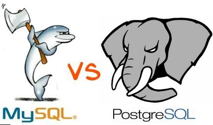

- After you reflect on this course, which topic, activity, or assignment was the most challenging? What did you learn by creating or doing this activity?
- What insights have you gained as a result of this course?
- Having now learned about both relational and non-relational databases, reflect on your experiences with both. Talk about the following:
- Difference between the two.
- Common and famous examples.
- The reasoning for choosing one over the other.
- The benefits and drawbacks of each.

- The New Avengers assignment was the most challenging and from this assignment I learned quite a bit including my way around the mySQL environment/user interface. This introduced me to User Defined Functions and Stored Procedures with mySQL.
- As a result of this course I have gained many insights into the use of SQL. Temporary tables, sub-queries, Joins, associations, aggregate functions. The use of the 'UNION' operator. The difference between SQL and NO-SQL databases. Overall database design.
- Relational databases rely on relational tables/schemas and relations for queries.
Non-Relational databases do not require relationships between tables, or a fixed schema.
Utilizes JSON documents where relationships can be made. - Relational databases are far more flexible (though harder to design and maintain) than non-relational databases.
- Drawbacks of a relational database is that they can sometimes become complex as the amount of data grows, and the relations between pieces of data become more complicated.
- NoSQL databases don't have the reliability functions which Relational Databases have (basically don't support ACID).
In order to support ACID developers will have to implement their own code, making their systems more complex.